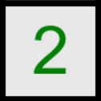
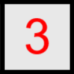

A játék menete:
Egy mezőkre osztott táblával indul a játék, ezek alatt rejtőzködnek az aknák.
A mezők állapotai a következők lehetnek:
- lefedett (alaphelyzet),
- feltárt, szomszédos aknával,
- feltárt aknamentes,
 zászlós (szerintünk akna van alatta),
zászlós (szerintünk akna van alatta),- feltárt, robbanó aknával
Egy mezőt feltárni kattintással lehet.
Ha egy mező feltárult, és mellette akna található, akkor annak darabszámát egy számmal fogja jelezni.
Ha a játékos aknamentes környezetű mezőre kattint, akkor az adott mezőhöz oldal- és sarokhatárosan csatlakozó (aknamentes) mezők mindegyike feltárul, valamint az így feltáruló aknamentes "szigettel" szomszédos mezők is feltárulnak.
A felsorolás szerinti negyedik állapot az egér jobb gombjával érhető el, csupán segítséget nyújt a játékhoz. A játékot teljesíteni lehet anélkül is, hogy akár csak egy mezőt is megjelölnénk zászlóval, ez azonban a játékban szerzett jelentős gyakorlatot és az egész játékmenet során mindvégig komoly figyelmet igényel.